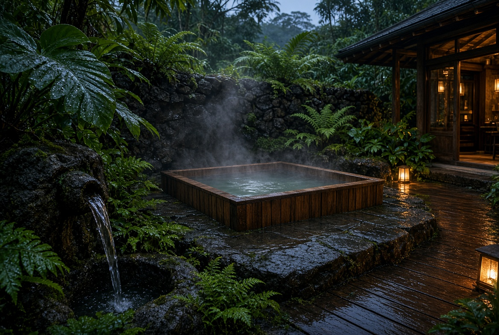
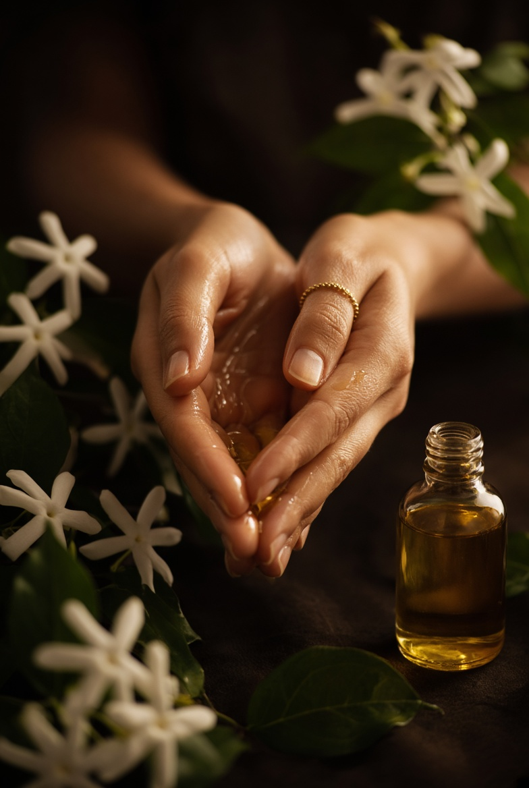
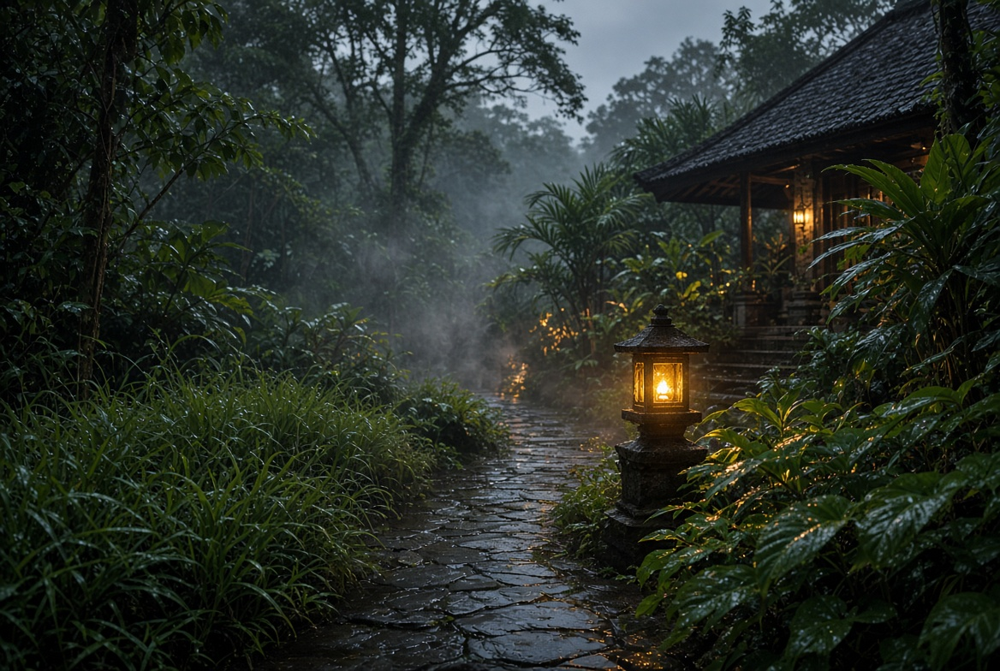
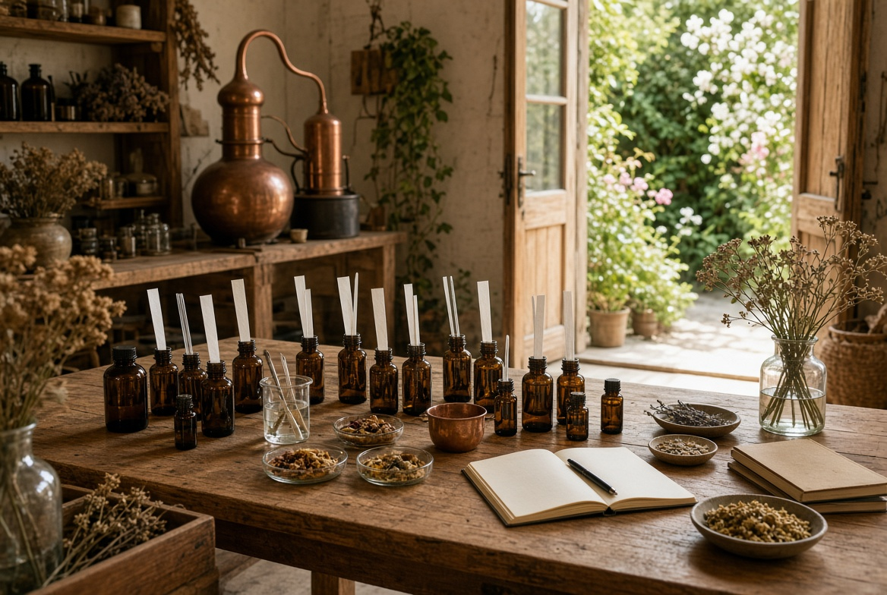

The oil is the first house. The sanctuary is the larger house — water, heat, scent, food, and study.
Nothing is a spa menu. Each room is one gesture of the original ritual.



Cleanse → sauna or steam → onsen → garden air → oil → Ruang Hening → café.
Arrive in the morning. Leave after dusk. Prove the sequence before many beds.
90 minutes of smelling. A half day to build your night oil. Two days of water and composition.
The sanctuary is not open yet. If you wish to be told when the first day-escape exists, write through Chat.